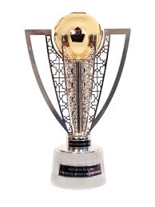
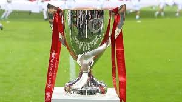
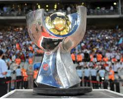
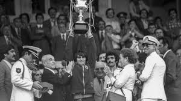
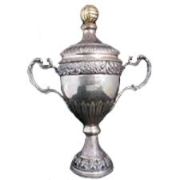
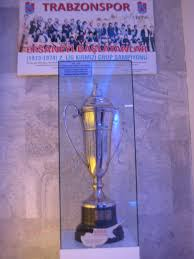

1975-76 1976-77 1978-79 1979-80 1980-81 1983-84 2010-11 2021-22

1976-77 1977-78 1983-84 1991-92 1994-95 2002-03 2003-04 2009-10 2019-20

2009-10 2019 - 20 2021 - 22

1975-76 1976-77 1977-78 1978-79 1979-80 1982-83 1994-95

1975-76 1977-78 1984-85 1993-94 1995-96
